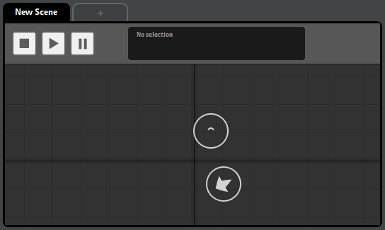
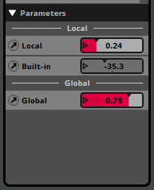

FMOD Studio User Manual 2.02
- Welcome to FMOD Studio
- FMOD Studio Concepts
- Organizing the Project
- Authoring Events
- Working with Instruments
- Managing Assets
- Parameters
- Getting Events into Your Game
- Mixing
- The Sandbox
- Editing During Live Update
- Profiling
- Dialogue and Localization
- Using Source Control
- Supporting Downloadable and User-generated Content
- Advanced Topics
- Quick Start Tutorial
- Event Macros Drawer Reference
- Instrument Reference
- Plug-in Reference
- Modulator Reference
- Parameters Reference
- Scripting
- Scripting API Reference
- Keyboard Shortcut Reference
- Troubleshooting
- Glossary
- Appendix: Celeste Getting Started Guide
- Appendix: Reaper Integration
10. The Sandbox
FMOD Studio's sandbox window lets you audition events in complex 3D environments. This means you can audition what your events would sound like playing in a game and use that audition to mix your project, even if your game is not yet ready to play FMOD Studio events.
In the sandbox, you can create complex three-dimensional scenes containing multiple event instances, snapshot instances and listeners. Once you have created a scene, you can play any or all of the event and snapshot instances it contains, and move the instances and listeners within the scene, to hear how they sound in combination.
10.1 Scenes
A scene is a virtual 3D environment used in the sandbox. Each scene represents a different virtual 3D space.

In order to audition events in the sandbox, you must first select a scene in which to audition instances of those events. To select a scene, click on it in the scenes browser. This causes the selected scene to be displayed in the current tab of the sandbox window's editor.
You can create a new scene by right-clicking in the scenes browser and selecting "New Scene" from the context menu.
Scenes can be organized into folders in the same manner as events.
10.2 Auditioning Events and Snapshots
The sandbox window's editor represents a top-down view of the scene currently selected in the scenes browser.

You can add instances of events and snapshots to this scene by dragging them from the events browser and snapshots browser. In addition, you can add listeners to the scene by right-clicking in the editor and selecting "Add Listener" from the context menu. By adding instances and listeners to a scene, you can create a virtual 3D environment filled with sounds, similar to the 3D environments that might appear in your game.
The event instances, snapshot instances, and listeners in a scene can be selected by clicking on them in the editor. You can select multiple listeners or instances by holding down the "Shift" or "Ctrl" key and clicking on each item you want to add to the multi-selection. The properties of selected items are displayed in the transport bar, and the max distance property of each selected event instance is displayed as a light gray circle surrounding that instance.
The instances and listeners in a scene can be moved around by clicking and dragging them in the editor. It is not possible to click and drag multiple items at the same time.
Instances of 3D events and snapshots in a scene exhibit their 3D behavior when auditioned, using their positions relative to the listeners in the scene to calculate their 3D attributes. If no listeners are present in the scene, FMOD Studio assumes that there's one listener in the scene, at position 0,0,0.
Event and snapshot instances dragged into a scene begin playing immediately. In addition, you can stop, pause, and play instances by selecting them in the editor then using the controls in the transport bar, or play and stop them by using their toggle playback buttons in the overview pane.
10.2.1 The Scene List
The sandbox window's overview pane contains a list of all the event and snapshot instances in the current scene.

Clicking the number or toggle playback button on an instance in the list begins auditioning that instance. If multiple instances are selected, all other instances in the multiselection will also be affected.
You can also audition an instance by pressing the key corresponding to the instance.
Clicking on the open in new window icon of an instance in the list opens that instance in an event editor or mixer window.
10.2.2 The Parameters List
If the currently selected event or snapshot instance uses user parameters or built-in parameters, those parameters appear in the overview pane alongside their values. Similarly, if a listener is selected, and there are any global parameters in your project, those parameters appear in the overview pane.

You can adjust the value of any parameter displayed in the overview pane (other than a built-in parameter) by clicking and dragging its number box, or by clicking on the triangle on its number box and entering a new value.
10.3 Profiling the Sandbox
It is possible to record a profiler session of auditioning event and snapshot instances in the sandbox window. A recorded profiler session can be played back with and without changes to its content, allowing you to make changes to your FMOD Studio project's content and hear those changes in the profiler session without having to re-record the scene.
For information about recording and using profiler sessions, see the Profiling chapter.